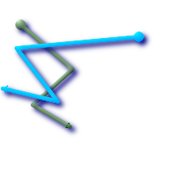
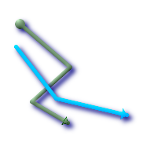
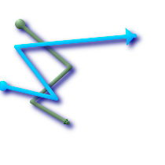

名前
ST_LineCrossingDirection — 二つのラインストリングが与えられ，クロスの種類を-3から3の区間の数で返します．0の場合はクロスしていません．
概要
integer ST_LineCrossingDirection(geometry linestringA, geometry linestringB);
説明
二つのラインストリングが与えられ，クロスの種類を-3から3の区間の数で返します．0の場合はクロスしていません．LINESTRINGのみサポートします．
整定数の定義は次の通りです．
0: クロスが無い
-1: 左クロス
1: 右クロス
-2: 複数クロスで最後が左
2: 複数クロスで最後が右
-3: 複数クロスで開始終了ともに左
3: 複数クロスで開始終了ともに右
初出バージョン: 1.4
例
 ライン1(緑)とライン2(青)，円が始点，三角が終点．クエリは次の通り．
SELECT ST_LineCrossingDirection(foo.line1, foo.line2) As l1_cross_l2 ,
ST_LineCrossingDirection(foo.line2, foo.line1) As l2_cross_l1
FROM (
SELECT
ST_GeomFromText('LINESTRING(25 169,89 114,40 70,86 43)') As line1,
ST_GeomFromText('LINESTRING(171 154,20 140,71 74,161 53)') As line2
) As foo;
l1_cross_l2 | l2_cross_l1
-------------+-------------
3 | -3
|
 ライン1(緑)とライン2(青)，円が始点，三角が終点．クエリは次の通り．
SELECT ST_LineCrossingDirection(foo.line1, foo.line2) As l1_cross_l2 ,
ST_LineCrossingDirection(foo.line2, foo.line1) As l2_cross_l1
FROM (
SELECT
ST_GeomFromText('LINESTRING(25 169,89 114,40 70,86 43)') As line1,
ST_GeomFromText('LINESTRING (171 154, 20 140, 71 74, 2.99 90.16)') As line2
) As foo;
l1_cross_l2 | l2_cross_l1
-------------+-------------
2 | -2
|
 ライン1(緑)とライン2(青)，円が始点，三角が終点．クエリは次の通り．
SELECT
ST_LineCrossingDirection(foo.line1, foo.line2) As l1_cross_l2 ,
ST_LineCrossingDirection(foo.line2, foo.line1) As l2_cross_l1
FROM (
SELECT
ST_GeomFromText('LINESTRING(25 169,89 114,40 70,86 43)') As line1,
ST_GeomFromText('LINESTRING (20 140, 71 74, 161 53)') As line2
) As foo;
l1_cross_l2 | l2_cross_l1
-------------+-------------
-1 | 1
|
 ライン1(緑)とライン2(青)，円が始点，三角が終点．クエリは次の通り．
SELECT ST_LineCrossingDirection(foo.line1, foo.line2) As l1_cross_l2 ,
ST_LineCrossingDirection(foo.line2, foo.line1) As l2_cross_l1
FROM (SELECT
ST_GeomFromText('LINESTRING(25 169,89 114,40 70,86 43)') As line1,
ST_GeomFromText('LINESTRING(2.99 90.16,71 74,20 140,171 154)') As line2
) As foo;
l1_cross_l2 | l2_cross_l1
-------------+-------------
-2 | 2
|
SELECT s1.gid, s2.gid, ST_LineCrossingDirection(s1.the_geom, s2.the_geom) FROM streets s1 CROSS JOIN streets s2 ON (s1.gid != s2.gid AND s1.the_geom && s2.the_geom ) WHERE ST_CrossingDirection(s1.the_geom, s2.the_geom) > 0;